[!NOTE] work in progress
run hcp with ocp-v
In this test, we will activate a host control plane based on ocp-v to test its functionality.
The most important aspect is to analyze how the ingress network traffic path looks.
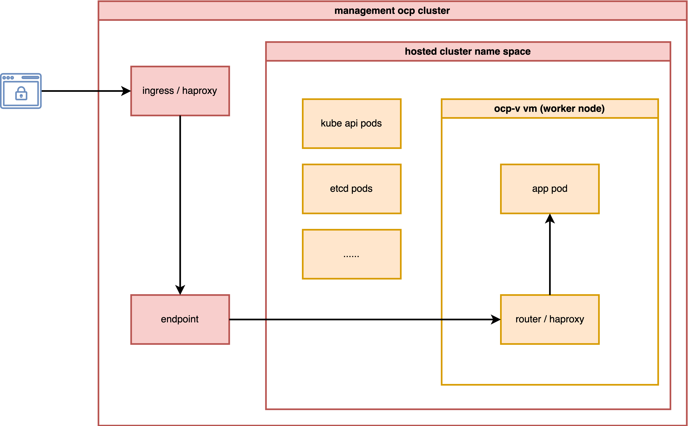
install metalLB
We need MetalLB to provide an ingress IP for the hosted cluster, such as the API server address.
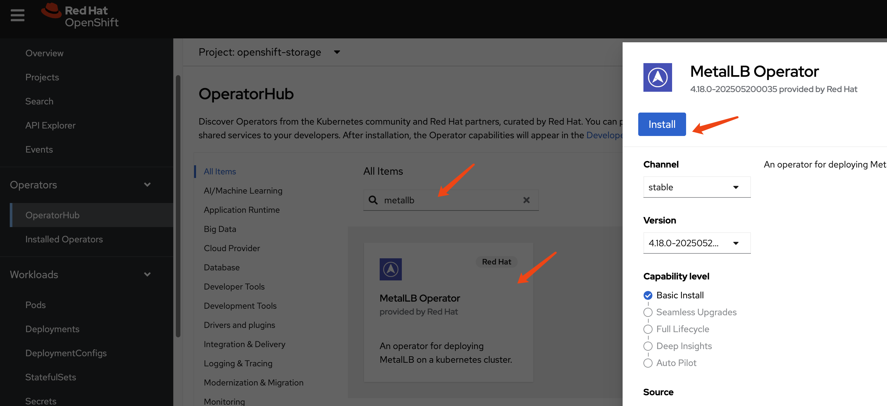
Create a single instance of a MetalLB custom resource:
apiVersion: metallb.io/v1beta1
kind: MetalLB
metadata:
name: metallb
namespace: metallb-systemConfigure IP address pool
apiVersion: metallb.io/v1beta1
kind: IPAddressPool
metadata:
namespace: metallb-system
name: hcp-pool
spec:
addresses:
- 192.168.35.200-192.168.35.220
autoAssign: true
avoidBuggyIPs: trueConfigure L2 advertisements
apiVersion: metallb.io/v1beta1
kind: L2Advertisement
metadata:
name: l2-advertisement
namespace: metallb-system
spec:
ipAddressPools:
- hcp-poolinstall lvm
We need storage to provide PVCs and VM disks. For simplicity, we will use LVM. It is a local disk/LVM, so there is no VM hot migration support.

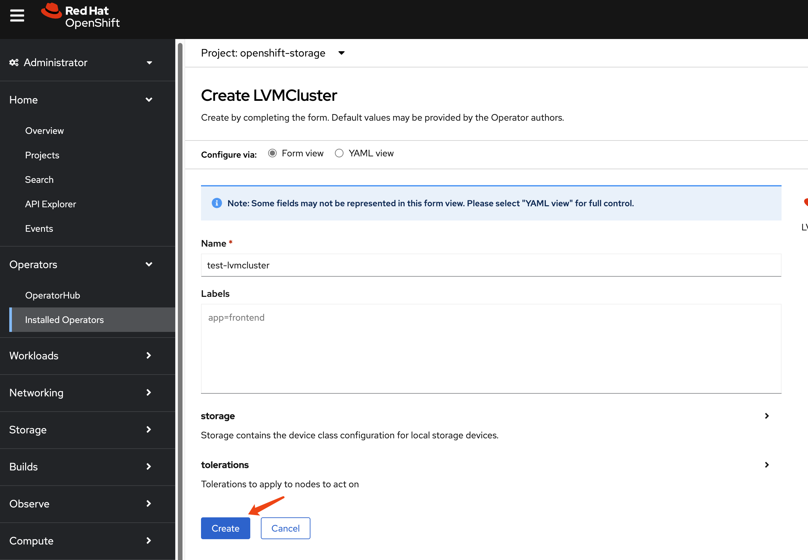
Then, set the LVM storage class as the default storage class.
oc patch storageclass lvms-vg1 -p '{"metadata": {"annotations":{"storageclass.kubernetes.io/is-default-class":"true"}}}'install ocp-v
We need ocp-v to provide VMs, which will serve as worker nodes for the hosted cluster.


install multicluster engine Operator
We do not need ACM; we only need MCE for HCP over ocp-v. MCE is a slice of ACM.


After enabling MCE, wait around 10 minutes. It will install some pods, and after it finishes, you can see the new web UI.


hcp
Okay, let’s start with HCP. First, we need to patch the ingress so it will pass all hosted cluster ingress traffic from the host cluster ingress into the hosted cluster.
oc patch ingresscontroller -n openshift-ingress-operator default \
--type=json \
-p '[{ "op": "add", "path": "/spec/routeAdmission", "value": {"wildcardPolicy":
"WildcardsAllowed"}}]'Next, verify your DNS settings so the hosted cluster’s domain name can be resolved. Set the DNS record:
*.apps.demo-01-rhsys.wzhlab.top->192.168.35.22- This means:
*.apps.wzh-01.demo-01-hcp.wzhlab.top->192.168.35.22
- This means:
using webUI
Okay, let’s create the hosted cluster.
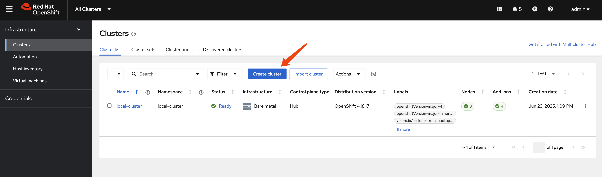
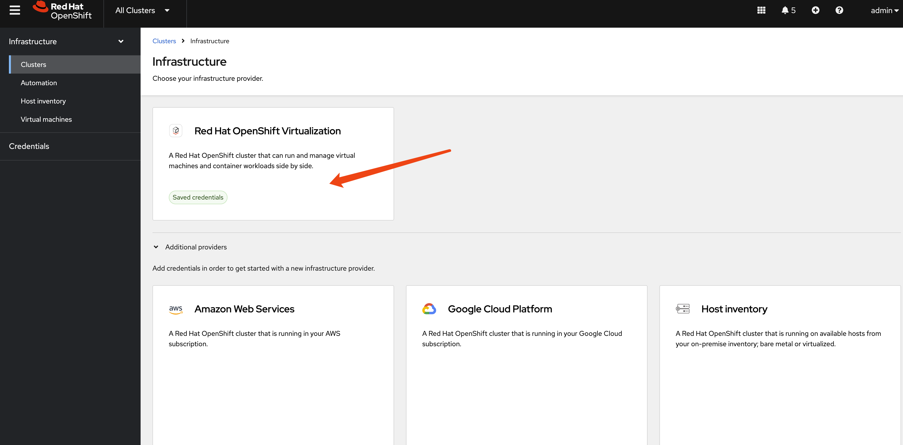
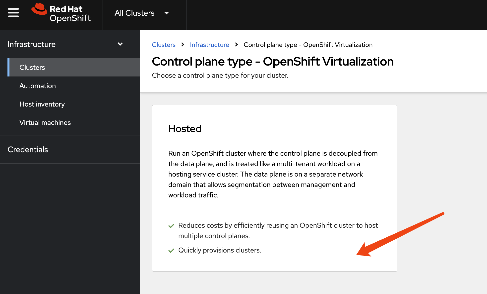
[!NOTE] The auto-generated CIDR will conflict with the host cluster. We need to change it manually.
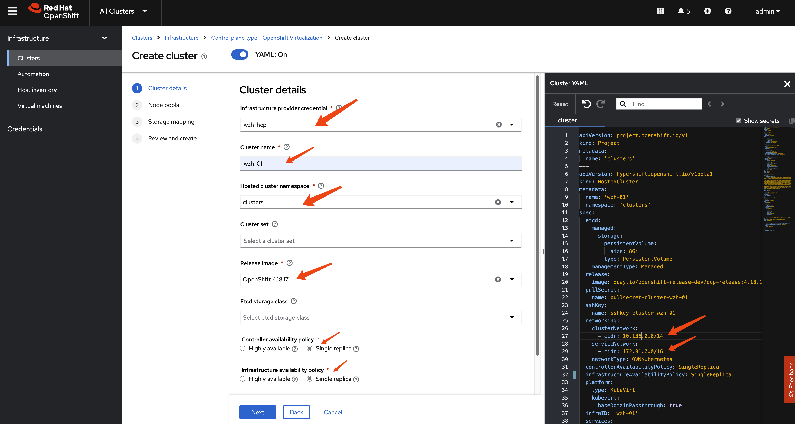
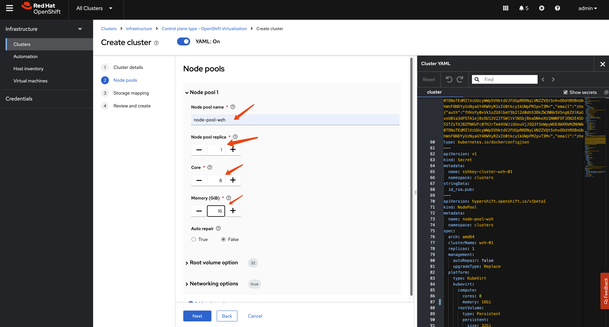
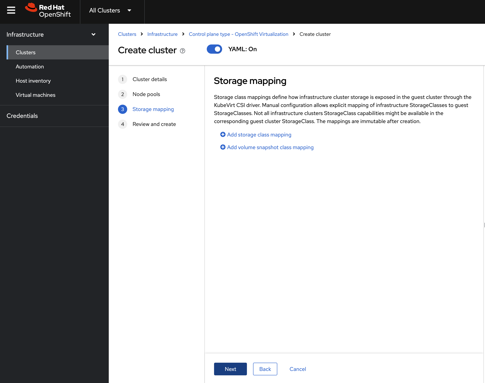
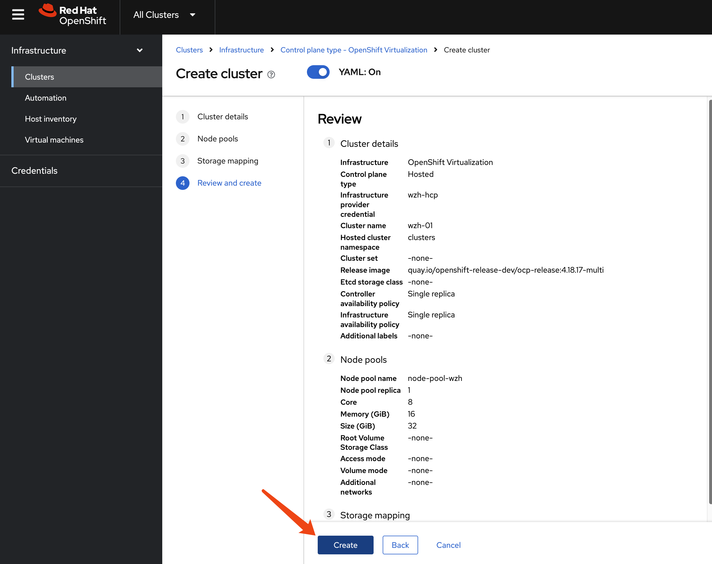
After creating the hosted cluster, we just need to wait. It will create control plane pods and create ocp-v VMs as worker nodes.
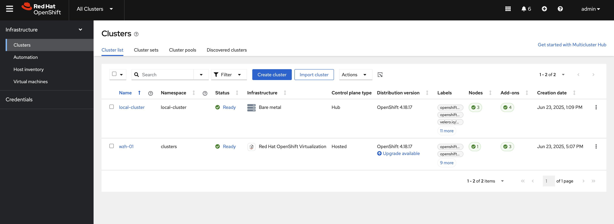
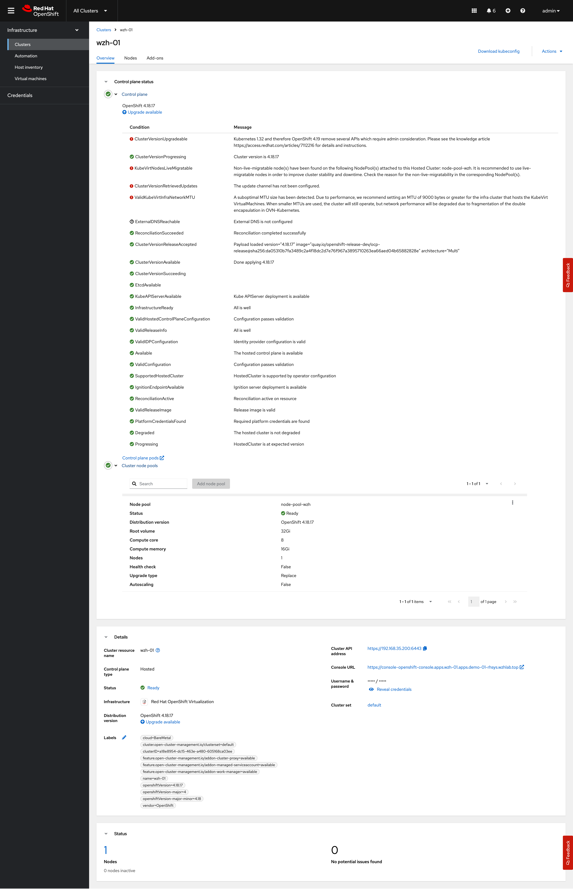
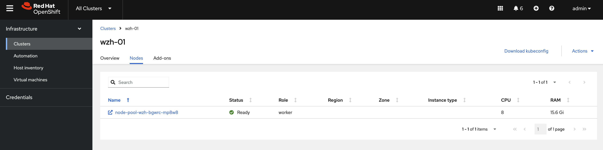
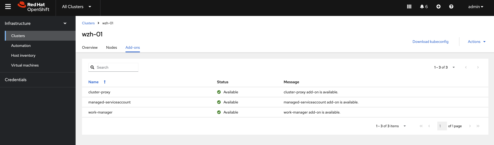
Log in to the hosted cluster; you can see we have a new OCP cluster.
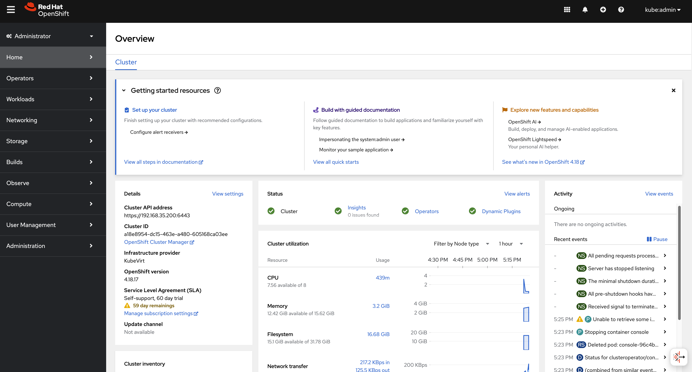
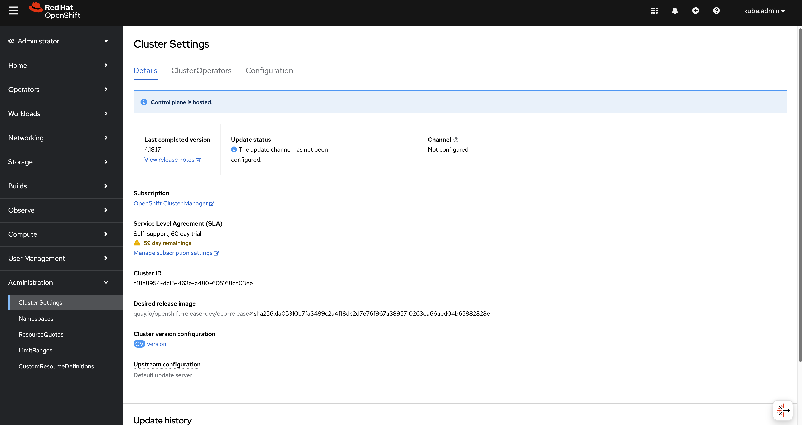
using cli
You can use HCP to create the hosted
cluster.
First, you need the CLI tool on your local host.
oc get ConsoleCLIDownload hcp-cli-download -o json | jq -r ".spec"
# {
# "description": "With the Hosted Control Plane command line interface, you can create and manage OpenShift hosted clusters.\n",
# "displayName": "hcp - Hosted Control Plane Command Line Interface (CLI)",
# "links": [
# {
# "href": "https://hcp-cli-download-multicluster-engine.apps.demo-01-rhsys.wzhlab.top/linux/amd64/hcp.tar.gz",
# "text": "Download hcp CLI for Linux for x86_64"
# },
# {
# "href": "https://hcp-cli-download-multicluster-engine.apps.demo-01-rhsys.wzhlab.top/darwin/amd64/hcp.tar.gz",
# "text": "Download hcp CLI for Mac for x86_64"
# },
# {
# "href": "https://hcp-cli-download-multicluster-engine.apps.demo-01-rhsys.wzhlab.top/windows/amd64/hcp.tar.gz",
# "text": "Download hcp CLI for Windows for x86_64"
# },
# {
# "href": "https://hcp-cli-download-multicluster-engine.apps.demo-01-rhsys.wzhlab.top/linux/arm64/hcp.tar.gz",
# "text": "Download hcp CLI for Linux for ARM 64"
# },
# {
# "href": "https://hcp-cli-download-multicluster-engine.apps.demo-01-rhsys.wzhlab.top/darwin/arm64/hcp.tar.gz",
# "text": "Download hcp CLI for Mac for ARM 64"
# },
# {
# "href": "https://hcp-cli-download-multicluster-engine.apps.demo-01-rhsys.wzhlab.top/linux/ppc64/hcp.tar.gz",
# "text": "Download hcp CLI for Linux for IBM Power"
# },
# {
# "href": "https://hcp-cli-download-multicluster-engine.apps.demo-01-rhsys.wzhlab.top/linux/ppc64le/hcp.tar.gz",
# "text": "Download hcp CLI for Linux for IBM Power, little endian"
# },
# {
# "href": "https://hcp-cli-download-multicluster-engine.apps.demo-01-rhsys.wzhlab.top/linux/s390x/hcp.tar.gz",
# "text": "Download hcp CLI for Linux for IBM Z"
# }
# ]
# }
wget --no-check-certificate https://hcp-cli-download-multicluster-engine.apps.demo-01-rhsys.wzhlab.top/linux/amd64/hcp.tar.gz
tar -xzf hcp.tar.gz -C $HOME/.local/bin/Then, create the hosted cluster with parameters.
oc get secret -n openshift-config pull-secret -o template='{{index .data ".dockerconfigjson"}}' | base64 --decode > ~/pull-secret.json
hosted_cluster_name=wzh-01
worker_count=1
value_for_memory=16Gi
value_for_cpu=8
var_release_image=quay.io/openshift-release-dev/ocp-release:4.18.17-multi
cluster_cidr="10.136.0.0/14"
service_cidr="172.31.0.0/16"
hcp create cluster kubevirt \
--name $hosted_cluster_name \
--node-pool-replicas $worker_count \
--pull-secret ~/pull-secret.json \
--memory $value_for_memory \
--cores $value_for_cpu \
--release-image $var_release_image \
--cluster-cidr ${cluster_cidr} \
--service-cidr ${service_cidr} \
--control-plane-availability-policy SingleReplica \
--infra-availability-policy SingleReplica
hcp create kubeconfig --name wzh-01 > kubeconfig.yaml
# hcp destroy cluster kubevirt --name wzh-01
oc --kubeconfig=kubeconfig.yaml get pod -A | grep ingress
# openshift-ingress-canary ingress-canary-bsf5b 1/1 Running 0 78m
# openshift-ingress router-default-7dd6bbdd-6sw8q 1/1 Running 0 78m
Debug
You can use the following steps to check the ingress network traffic path.
oc patch ingresscontroller -n openshift-ingress-operator default --type=json -p '[{ "op": "add", "path": "/spec/routeAdmission", "value": {wildcardPolicy: "WildcardsAllowed"}}]'
oc get secret -n openshift-config pull-secret -o template='{{index .data ".dockerconfigjson"}}' | base64 --decode > ~/pull-secret.json
hcp create cluster kubevirt \
--name cluster1 \
--release-image quay.io/openshift-release-dev/ocp-release:4.16.41-x86_64 \
--node-pool-replicas 2 \
--pull-secret ~/pull-secret.json \
--memory 6Gi \
--cores 2
hcp create kubeconfig --name cluster1 > cluster1-kubeconfig
oc get node -o wide
# NAME STATUS ROLES AGE VERSION INTERNAL-IP EXTERNAL-IP OS-IMAGE KERNEL-VERSION CONTAINER-RUNTIME
# control-plane-cluster-chw7m-1 Ready control-plane,master 96m v1.29.14+7cf4c05 10.10.10.10 <none> Red Hat Enterprise Linux CoreOS 416.94.202505191152-0 5.14.0-427.68.2.el9_4.x86_64 cri-o://1.29.13-6.rhaos4.16.git729443e.el9
# control-plane-cluster-chw7m-2 Ready control-plane,master 96m v1.29.14+7cf4c05 10.10.10.11 <none> Red Hat Enterprise Linux CoreOS 416.94.202505191152-0 5.14.0-427.68.2.el9_4.x86_64 cri-o://1.29.13-6.rhaos4.16.git729443e.el9
# control-plane-cluster-chw7m-3 Ready control-plane,master 80m v1.29.14+7cf4c05 10.10.10.12 <none> Red Hat Enterprise Linux CoreOS 416.94.202505191152-0 5.14.0-427.68.2.el9_4.x86_64 cri-o://1.29.13-6.rhaos4.16.git729443e.el9
# worker-cluster-chw7m-1 Ready worker 85m v1.29.14+7cf4c05 10.10.10.20 <none> Red Hat Enterprise Linux CoreOS 416.94.202505191152-0 5.14.0-427.68.2.el9_4.x86_64 cri-o://1.29.13-6.rhaos4.16.git729443e.el9
# worker-cluster-chw7m-2 Ready worker 85m v1.29.14+7cf4c05 10.10.10.21 <none> Red Hat Enterprise Linux CoreOS 416.94.202505191152-0 5.14.0-427.68.2.el9_4.x86_64 cri-o://1.29.13-6.rhaos4.16.git729443e.el9
# worker-cluster-chw7m-3 Ready worker 85m v1.29.14+7cf4c05 10.10.10.22 <none> Red Hat Enterprise Linux CoreOS 416.94.202505191152-0 5.14.0-427.68.2.el9_4.x86_64 cri-o://1.29.13-6.rhaos4.16.git729443e.el9
oc --kubeconfig=cluster1-kubeconfig get node -o wide
# NAME STATUS ROLES AGE VERSION INTERNAL-IP EXTERNAL-IP OS-IMAGE KERNEL-VERSION CONTAINER-RUNTIME
# cluster1-34459eb5-8rz87 Ready worker 20m v1.29.14+7cf4c05 10.235.0.109 <none> Red Hat Enterprise Linux CoreOS 416.94.202505191152-0 5.14.0-427.68.2.el9_4.x86_64 cri-o://1.29.13-6.rhaos4.16.git729443e.el9
# cluster1-34459eb5-92vwb Ready worker 20m v1.29.14+7cf4c05 10.234.0.84 <none> Red Hat Enterprise Linux CoreOS 416.94.202505191152-0 5.14.0-427.68.2.el9_4.x86_64 cri-o://1.29.13-6.rhaos4.16.git729443e.el9
oc get pod -n clusters-cluster1
# NAME READY STATUS RESTARTS AGE
# capi-provider-5ffdb4ff76-q54pm 1/1 Running 0 4h5m
# catalog-operator-5577489cfb-4fvz6 2/2 Running 3 (4h2m ago) 4h3m
# certified-operators-catalog-66b8f94fdc-nkf8l 1/1 Running 0 4h3m
# cluster-api-65b956c6d-4nvhw 1/1 Running 0 4h5m
# cluster-image-registry-operator-5f659c7846-wrvzp 2/2 Running 0 4h3m
# cluster-network-operator-5dc6b5d48b-mdbfm 2/2 Running 0 4h3m
# cluster-node-tuning-operator-674f7d7fb9-4ndhc 1/1 Running 0 4h3m
# cluster-policy-controller-64dd674d57-cwxl9 1/1 Running 0 4h3m
# cluster-policy-controller-64dd674d57-dfw5f 1/1 Running 0 4h3m
# cluster-policy-controller-64dd674d57-rtvv5 1/1 Running 0 4h3m
# cluster-storage-operator-8599994c74-sxs48 1/1 Running 0 4h3m
# cluster-version-operator-9d59b547c-6nk29 1/1 Running 0 4h3m
# community-operators-catalog-7f8db78548-5kjfz 1/1 Running 0 45m
# control-plane-operator-8857686b7-zgt2m 1/1 Running 0 4h5m
# control-plane-pki-operator-dfc8fb7c9-8hwtb 1/1 Running 0 4h5m
# csi-snapshot-controller-56c9c74bb8-24qnw 1/1 Running 0 4h2m
# csi-snapshot-controller-operator-55cf7d8698-pzfzl 1/1 Running 0 4h3m
# csi-snapshot-webhook-7bdd696c5-6cn76 1/1 Running 0 4h2m
# dns-operator-594fbf7874-gggxm 1/1 Running 0 4h3m
# etcd-0 4/4 Running 0 4h5m
# etcd-1 4/4 Running 0 4h5m
# etcd-2 4/4 Running 0 4h5m
# hosted-cluster-config-operator-7b54d95b7-x4zjr 1/1 Running 0 4h3m
# ignition-server-ccd54b788-7x8rz 1/1 Running 0 4h3m
# ignition-server-ccd54b788-w47kn 1/1 Running 0 4h3m
# ignition-server-ccd54b788-zdc7q 1/1 Running 0 4h3m
# ignition-server-proxy-6c886bb8c-28fn9 1/1 Running 0 4h3m
# ignition-server-proxy-6c886bb8c-6jdzl 1/1 Running 0 4h3m
# ignition-server-proxy-6c886bb8c-6xqwz 1/1 Running 0 4h3m
# ingress-operator-6495bb45fd-mpgvv 2/2 Running 0 4h3m
# konnectivity-agent-74fc646974-5mw4b 1/1 Running 0 4h3m
# konnectivity-agent-74fc646974-b28jf 1/1 Running 0 4h3m
# konnectivity-agent-74fc646974-hwqks 1/1 Running 0 4h3m
# kube-apiserver-c9cc7b7cf-kzmk8 4/4 Running 0 4h4m
# kube-apiserver-c9cc7b7cf-sjsn9 4/4 Running 0 4h4m
# kube-apiserver-c9cc7b7cf-xjdtr 4/4 Running 0 4h4m
# kube-controller-manager-779c95db6-42tjm 1/1 Running 0 3h54m
# kube-controller-manager-779c95db6-8v96j 1/1 Running 0 3h53m
# kube-controller-manager-779c95db6-trwjb 1/1 Running 0 3h54m
# kube-scheduler-75c4d59d9b-gcn72 1/1 Running 0 4h4m
# kube-scheduler-75c4d59d9b-mlmqw 1/1 Running 0 4h4m
# kube-scheduler-75c4d59d9b-nf84k 1/1 Running 0 4h4m
# kubevirt-cloud-controller-manager-646d597f9-g9f6h 1/1 Running 0 4h3m
# kubevirt-cloud-controller-manager-646d597f9-klbv9 1/1 Running 1 (4h1m ago) 4h3m
# kubevirt-cloud-controller-manager-646d597f9-l8x56 1/1 Running 0 4h3m
# kubevirt-csi-controller-f97c4b788-jcxk9 5/5 Running 0 4h3m
# machine-approver-77cfbbf4bf-g6b8c 1/1 Running 0 4h3m
# multus-admission-controller-847d99998f-bbgdg 2/2 Running 0 3h56m
# multus-admission-controller-847d99998f-r5vxg 2/2 Running 0 3h56m
# network-node-identity-68b9756f4f-49bwn 3/3 Running 0 3h56m
# network-node-identity-68b9756f4f-7fdjx 3/3 Running 0 3h56m
# network-node-identity-68b9756f4f-tmm75 3/3 Running 0 3h56m
# oauth-openshift-97b69b444-mj6vv 4/4 Running 0 4h1m
# oauth-openshift-97b69b444-wrq8g 4/4 Running 0 4h1m
# oauth-openshift-97b69b444-xf95d 4/4 Running 0 4h1m
# olm-operator-f7d557b8f-6n8sd 2/2 Running 0 4h3m
# openshift-apiserver-686b564f95-k2xgl 3/3 Running 0 3h52m
# openshift-apiserver-686b564f95-n9hlh 3/3 Running 0 3h51m
# openshift-apiserver-686b564f95-xqnw6 3/3 Running 0 3h54m
# openshift-controller-manager-7c6965c46c-5gjlc 1/1 Running 0 4h3m
# openshift-controller-manager-7c6965c46c-cbnzt 1/1 Running 0 4h3m
# openshift-controller-manager-7c6965c46c-tvjgj 1/1 Running 0 4h3m
# openshift-oauth-apiserver-85854594c8-8czdk 2/2 Running 0 4h3m
# openshift-oauth-apiserver-85854594c8-8sv5f 2/2 Running 0 4h3m
# openshift-oauth-apiserver-85854594c8-w6kc9 2/2 Running 0 4h3m
# openshift-route-controller-manager-7d545799b8-4hltt 1/1 Running 0 4h3m
# openshift-route-controller-manager-7d545799b8-dw2qr 1/1 Running 0 4h3m
# openshift-route-controller-manager-7d545799b8-x5l29 1/1 Running 0 4h3m
# ovnkube-control-plane-69dbc86f84-d58dt 3/3 Running 0 3h56m
# ovnkube-control-plane-69dbc86f84-wc45w 3/3 Running 0 3h56m
# packageserver-575b869f87-45rj5 2/2 Running 0 4h3m
# packageserver-575b869f87-9lx7q 2/2 Running 0 4h3m
# packageserver-575b869f87-xqfbb 2/2 Running 0 4h3m
# redhat-marketplace-catalog-7c55888d99-zmbhq 1/1 Running 0 4h3m
# redhat-operators-catalog-584984d994-clbqz 1/1 Running 0 4h3m
# virt-launcher-cluster1-a8ceb069-p8hzl-khcfs 1/1 Running 0 4h3m
# virt-launcher-cluster1-a8ceb069-r59xh-w2hln 1/1 Running 0 4h3m
oc get --namespace clusters hostedclusters
# NAME VERSION KUBECONFIG PROGRESS AVAILABLE PROGRESSING MESSAGE
# cluster1 4.16.41 cluster1-admin-kubeconfig Completed True False The hosted control plane is available
oc --kubeconfig=cluster1-kubeconfig get co
# NAME VERSION AVAILABLE PROGRESSING DEGRADED SINCE MESSAGE
# console 4.16.41 True False False 18m
# csi-snapshot-controller 4.16.41 True False False 26m
# dns 4.16.41 True False False 19m
# image-registry 4.16.41 True False False 19m
# ingress 4.16.41 True False False 18m
# insights 4.16.41 True False False 19m
# kube-apiserver 4.16.41 True False False 25m
# kube-controller-manager 4.16.41 True False False 25m
# kube-scheduler 4.16.41 True False False 25m
# kube-storage-version-migrator 4.16.41 True False False 19m
# monitoring 4.16.41 True False False 11m
# network 4.16.41 True True False 20m DaemonSet "/openshift-multus/network-metrics-daemon" is not available (awaiting 1 nodes)
# node-tuning 4.16.41 True False False 22m
# openshift-apiserver 4.16.41 True False False 25m
# openshift-controller-manager 4.16.41 True False False 25m
# openshift-samples 4.16.41 True False False 19m
# operator-lifecycle-manager 4.16.41 True False False 25m
# operator-lifecycle-manager-catalog 4.16.41 True False False 26m
# operator-lifecycle-manager-packageserver 4.16.41 True False False 25m
# service-ca 4.16.41 True False False 19m
# storage 4.16.41 True False False 26m
oc get service -n clusters-cluster1 | grep ingress
# default-ingress-passthrough-service-r4xs8f6dtw ClusterIP 172.231.122.191 <none> 443/TCP 26m
oc get endpointslice -n clusters-cluster1 -l kubernetes.io/service-name=default-ingress-passthrough-service-r4xs8f6dtw
# NAME ADDRESSTYPE PORTS ENDPOINTS AGE
# default-ingress-passthrough-service-r4xs8f6dtw-cluster1-dnkns-6c6gb-ipv4 IPv4 31314 10.235.0.109 26m
# default-ingress-passthrough-service-r4xs8f6dtw-cluster1-dnkns-frh9v-ipv4 IPv4 31314 10.234.0.84 26m
oc get endpointslice -n clusters-cluster1 -l kubernetes.io/service-name=default-ingress-passthrough-service-r4xs8f6dtw -o yaml
# apiVersion: v1
# items:
# - addressType: IPv4
# apiVersion: discovery.k8s.io/v1
# endpoints:
# - addresses:
# - 10.235.0.109
# conditions:
# ready: true
# serving: true
# terminating: false
# kind: EndpointSlice
# metadata:
# creationTimestamp: "2025-06-20T08:24:57Z"
# generation: 3
# labels:
# endpointslice.kubernetes.io/managed-by: control-plane-operator.hypershift.openshift.io
# kubernetes.io/service-name: default-ingress-passthrough-service-r4xs8f6dtw
# name: default-ingress-passthrough-service-r4xs8f6dtw-cluster1-dnkns-6c6gb-ipv4
# namespace: clusters-cluster1
# ownerReferences:
# - apiVersion: kubevirt.io/v1
# blockOwnerDeletion: true
# controller: true
# kind: VirtualMachine
# name: cluster1-34459eb5-8rz87
# uid: b7e3efc4-fc47-4e6c-9cbc-fdf7086cee87
# resourceVersion: "102738"
# uid: f011bb6d-ca91-4a4a-bc23-e7488673287e
# ports:
# - name: https-443
# port: 31314
# protocol: TCP
# - addressType: IPv4
# apiVersion: discovery.k8s.io/v1
# endpoints:
# - addresses:
# - 10.234.0.84
# conditions:
# ready: true
# serving: true
# terminating: false
# kind: EndpointSlice
# metadata:
# creationTimestamp: "2025-06-20T08:24:57Z"
# generation: 3
# labels:
# endpointslice.kubernetes.io/managed-by: control-plane-operator.hypershift.openshift.io
# kubernetes.io/service-name: default-ingress-passthrough-service-r4xs8f6dtw
# name: default-ingress-passthrough-service-r4xs8f6dtw-cluster1-dnkns-frh9v-ipv4
# namespace: clusters-cluster1
# ownerReferences:
# - apiVersion: kubevirt.io/v1
# blockOwnerDeletion: true
# controller: true
# kind: VirtualMachine
# name: cluster1-34459eb5-92vwb
# uid: b7d1e3b8-fe1e-48ae-b2f7-c9ede97db9ad
# resourceVersion: "102921"
# uid: 40eb652a-8e5b-4707-b058-e40afbef36cc
# ports:
# - name: https-443
# port: 31314
# protocol: TCP
# kind: List
# metadata:
# resourceVersion: ""
oc get service/default-ingress-passthrough-service-r4xs8f6dtw -n clusters-cluster1 -o yaml
# apiVersion: v1
# kind: Service
# metadata:
# creationTimestamp: "2025-06-20T08:24:52Z"
# labels:
# hypershift.openshift.io/infra-id: cluster1-qnbwb
# name: default-ingress-passthrough-service-r4xs8f6dtw
# namespace: clusters-cluster1
# resourceVersion: "98333"
# uid: 8ff019e3-b2e8-4d98-aef3-f8a4c0df7ff6
# spec:
# clusterIP: 172.231.122.191
# clusterIPs:
# - 172.231.122.191
# internalTrafficPolicy: Cluster
# ipFamilies:
# - IPv4
# ipFamilyPolicy: SingleStack
# ports:
# - name: https-443
# port: 443
# protocol: TCP
# targetPort: 31314
# sessionAffinity: None
# type: ClusterIP
# status:
# loadBalancer: {}
oc get pods -n openshift-ovn-kubernetes --show-labels -o wide
# NAME READY STATUS RESTARTS AGE IP NODE NOMINATED NODE READINESS GATES LABELS
# ovnkube-control-plane-996894568-6ndp5 2/2 Running 0 99m 10.10.10.10 control-plane-cluster-chw7m-1 <none> <none> app=ovnkube-control-plane,component=network,kubernetes.io/os=linux,openshift.io/component=network,pod-template-hash=996894568,type=infra
# ovnkube-control-plane-996894568-hdqwr 2/2 Running 0 99m 10.10.10.11 control-plane-cluster-chw7m-2 <none> <none> app=ovnkube-control-plane,component=network,kubernetes.io/os=linux,openshift.io/component=network,pod-template-hash=996894568,type=infra
# ovnkube-node-6nq8g 8/8 Running 0 99m 10.10.10.11 control-plane-cluster-chw7m-2 <none> <none> app=ovnkube-node,component=network,controller-revision-hash=657d997c56,kubernetes.io/os=linux,openshift.io/component=network,ovn-db-pod=true,pod-template-generation=2,type=infra
# ovnkube-node-7gw6m 8/8 Running 0 89m 10.10.10.22 worker-cluster-chw7m-3 <none> <none> app=ovnkube-node,component=network,controller-revision-hash=657d997c56,kubernetes.io/os=linux,openshift.io/component=network,ovn-db-pod=true,pod-template-generation=2,type=infra
# ovnkube-node-8zwbm 8/8 Running 0 99m 10.10.10.10 control-plane-cluster-chw7m-1 <none> <none> app=ovnkube-node,component=network,controller-revision-hash=657d997c56,kubernetes.io/os=linux,openshift.io/component=network,ovn-db-pod=true,pod-template-generation=2,type=infra
# ovnkube-node-jx92d 8/8 Running 0 89m 10.10.10.20 worker-cluster-chw7m-1 <none> <none> app=ovnkube-node,component=network,controller-revision-hash=657d997c56,kubernetes.io/os=linux,openshift.io/component=network,ovn-db-pod=true,pod-template-generation=2,type=infra
# ovnkube-node-l4rrm 8/8 Running 0 89m 10.10.10.21 worker-cluster-chw7m-2 <none> <none> app=ovnkube-node,component=network,controller-revision-hash=657d997c56,kubernetes.io/os=linux,openshift.io/component=network,ovn-db-pod=true,pod-template-generation=2,type=infra
# ovnkube-node-xlfjg 8/8 Running 0 84m 10.10.10.12 control-plane-cluster-chw7m-3 <none> <none> app=ovnkube-node,component=network,controller-revision-hash=657d997c56,kubernetes.io/os=linux,openshift.io/component=network,ovn-db-pod=true,pod-template-generation=2,type=infra
oc --kubeconfig=cluster1-kubeconfig get pod -n openshift-ovn-kubernetes --show-labels -o wide
# NAME READY STATUS RESTARTS AGE IP NODE NOMINATED NODE READINESS GATES LABELS
# ovnkube-node-cwpnf 8/8 Running 0 25m 10.234.0.84 cluster1-34459eb5-92vwb <none> <none> app=ovnkube-node,component=network,controller-revision-hash=65fdbff4c4,kubernetes.io/os=linux,openshift.io/component=network,ovn-db-pod=true,pod-template-generation=2,type=infra
# ovnkube-node-mlpmg 8/8 Running 0 25m 10.235.0.109 cluster1-34459eb5-8rz87 <none> <none> app=ovnkube-node,component=network,controller-revision-hash=65fdbff4c4,kubernetes.io/os=linux,openshift.io/component=network,ovn-db-pod=true,pod-template-generation=2,type=infra
VAR_POD=$(oc get pod -n openshift-ingress -l ingresscontroller.operator.openshift.io/deployment-ingresscontroller=default -o name | sed -n '1p' | awk -F '/' '{print $NF}')
oc exec -n openshift-ingress $VAR_POD -- cat haproxy.config | grep -A 8 default-ingress-passthrough-route-
# backend be_tcp:clusters-cluster1:default-ingress-passthrough-route-r4xs8f6dtw
# balance source
# hash-type consistent
# timeout check 5000ms
# server ept:default-ingress-passthrough-service-r4xs8f6dtw:https-443:10.235.0.109:31314 10.235.0.109:31314 weight 1 check inter 5000ms
# server ept:default-ingress-passthrough-service-r4xs8f6dtw:https-443:10.234.0.84:31314 10.234.0.84:31314 weight 1 check inter 5000ms
cat << 'EOF' > check.sh
#!/bin/bash
# --- 用户配置区 ---
# 1. 设置您的 kubeconfig 文件路径
KUBECONFIG_PATH="cluster1-kubeconfig"
# 2. 设置要操作的 Namespace
NAMESPACE="openshift-ovn-kubernetes"
# 3. 定义您要搜索的值列表。在括号内添加或删除您的搜索词，用空格分隔。
# 例如: SEARCH_TERMS=("10.128.2.59" "some-other-value" "another-bridge")
SEARCH_TERMS=(
"10.235.0.109"
"10.234.0.84"
"172.231.122.191"
)
# 4. 设置要检查的 Pod 数量
POD_COUNT=2
# --- 脚本核心逻辑 ---
# 检查 oc 命令是否存在
if ! command -v oc &> /dev/null; then
echo "[ERROR] 'oc' command not found. Please ensure it is installed and in your PATH."
exit 1
fi
# 将搜索词数组转换为 grep 使用的正则表达式模式 (e.g., "value1|value2|value3")
GREP_PATTERN=$(printf "%s|" "${SEARCH_TERMS[@]}")
GREP_PATTERN=${GREP_PATTERN%|} # 移除末尾多余的'|'
# 检查搜索列表是否为空
if [ -z "$GREP_PATTERN" ]; then
echo "[ERROR] SEARCH_TERMS array is empty. Please add values to search for."
exit 1
fi
echo "[INFO] Kubeconfig: ${KUBECONFIG_PATH}"
echo "[INFO] Namespace: ${NAMESPACE}"
echo "[INFO] Searching for patterns: ${GREP_PATTERN}"
echo "----------------------------------------------------"
# 获取前N个 Pod 的列表，这样可以避免在循环中重复执行 'oc get'
POD_LIST=$(oc --kubeconfig=${KUBECONFIG_PATH} get pods -n ${NAMESPACE} -l app=ovnkube-node -o name | head -n ${POD_COUNT})
if [ -z "${POD_LIST}" ]; then
echo "[ERROR] No pods found with label 'app=ovnkube-node' in namespace '${NAMESPACE}'."
exit 1
fi
# 循环处理每个 Pod
for POD_FULL_NAME in ${POD_LIST}; do
# 从 "pod/my-pod-name" 中提取出 "my-pod-name"
POD_NAME=$(basename "${POD_FULL_NAME}")
echo "[INFO] ==> Checking Pod: ${POD_NAME}"
# 执行 ovn-nbctl show 命令，并将标准错误重定向到标准输出，以捕获所有信息
# 注意：脚本化执行时，-it (交互式终端) 是不必要且可能导致问题的，因此已移除。
CMD_OUTPUT=$(oc --kubeconfig=${KUBECONFIG_PATH} exec -n ${NAMESPACE} "${POD_NAME}" -c ovn-controller -- ovn-nbctl show 2>&1)
# 检查 oc exec 命令是否执行成功
if [ $? -ne 0 ]; then
echo "[ERROR] Failed to execute 'ovn-nbctl show' in pod ${POD_NAME}. Output:"
echo "${CMD_OUTPUT}"
continue # 跳过这个Pod，继续下一个
fi
# 使用 grep 搜索并提取上下文
# -E: 使用扩展正则表达式 (为了'|')
# -B 10: Before, 显示匹配行之前的10行
# -A 10: After, 显示匹配行之后的10行
CONTEXT_OUTPUT=$(echo "${CMD_OUTPUT}" | grep -E -B 5 -A 5 "${GREP_PATTERN}")
# 如果 CONTEXT_OUTPUT 不为空，说明找到了匹配项
if [ -n "${CONTEXT_OUTPUT}" ]; then
echo "[SUCCESS] Found match in Pod: ${POD_NAME}"
echo "================= MATCH DETAILS ================="
echo "${CONTEXT_OUTPUT}"
echo "================================================="
else
echo "[INFO] No match found in Pod: ${POD_NAME}"
fi
echo # 输出一个空行以分隔不同 Pod 的结果
done
echo "[INFO] Script finished."
EOF
bash check.sh
# [INFO] Kubeconfig: cluster1-kubeconfig
# [INFO] Namespace: openshift-ovn-kubernetes
# [INFO] Searching for patterns: 10.235.0.109|10.234.0.84|172.231.122.191
# ----------------------------------------------------
# [INFO] ==> Checking Pod: ovnkube-node-cwpnf
# [SUCCESS] Found match in Pod: ovnkube-node-cwpnf
# ================= MATCH DETAILS =================
# type: router
# router-port: rtoj-GR_cluster1-34459eb5-92vwb
# router 8f1a166a-c6b0-49a0-b8bf-5f61f75c74d1 (GR_cluster1-34459eb5-92vwb)
# port rtoe-GR_cluster1-34459eb5-92vwb
# mac: "0a:58:0a:ea:00:54"
# networks: ["10.234.0.84/23"]
# port rtoj-GR_cluster1-34459eb5-92vwb
# mac: "0a:58:64:41:00:03"
# networks: ["100.65.0.3/16"]
# nat 2a4a2348-5ec0-4e24-bf67-1868756fc9fb
# external ip: "10.234.0.84"
# logical ip: "10.133.0.9"
# type: "snat"
# nat 43f5b9a8-793b-4f8f-ba46-839fc1723fcd
# external ip: "10.234.0.84"
# logical ip: "10.133.0.28"
# type: "snat"
# nat 458c3d81-c8e0-4e3b-a68c-5f905fbf4456
# external ip: "10.234.0.84"
# logical ip: "10.133.0.19"
# type: "snat"
# nat 46684c6a-8ba1-421e-b1fd-cb09e381a83c
# external ip: "10.234.0.84"
# logical ip: "10.133.0.17"
# type: "snat"
# nat 522d651f-a596-4791-ab47-77b7b3a8be35
# external ip: "10.234.0.84"
# logical ip: "10.133.0.5"
# type: "snat"
# nat 67d5a123-7e91-4411-a760-493f21d4ba0f
# external ip: "10.234.0.84"
# logical ip: "100.65.0.3"
# type: "snat"
# nat 6bf27fd3-2aff-4f71-8c1f-8de76239c2ac
# external ip: "10.234.0.84"
# logical ip: "10.133.0.22"
# type: "snat"
# nat 71f39dc9-63ec-4820-8746-852cf789df34
# external ip: "10.234.0.84"
# logical ip: "10.133.0.25"
# type: "snat"
# nat 7be25cad-98de-4fdb-bd66-175ce0fd8a2c
# external ip: "10.234.0.84"
# logical ip: "10.133.0.18"
# type: "snat"
# nat 7d1f75aa-db3e-4595-8db2-6967dc5c0916
# external ip: "10.234.0.84"
# logical ip: "10.133.0.4"
# type: "snat"
# nat 97d0804c-8e6e-4f9f-a680-98399bab80a7
# external ip: "10.234.0.84"
# logical ip: "10.133.0.23"
# type: "snat"
# nat bba70e10-a85b-402d-8dd6-ff9bd03f458e
# external ip: "10.234.0.84"
# logical ip: "10.133.0.27"
# type: "snat"
# nat c4d93873-6370-4203-a780-282f97bec059
# external ip: "10.234.0.84"
# logical ip: "10.133.0.12"
# type: "snat"
# nat c679eb74-052e-4172-b1bd-8f8a01b88f5e
# external ip: "10.234.0.84"
# logical ip: "10.133.0.15"
# type: "snat"
# nat c990fab7-7b5d-4b1c-a00f-939f3feef6c3
# external ip: "10.234.0.84"
# logical ip: "10.133.0.20"
# type: "snat"
# nat c9a1e03c-462a-4037-b3a7-ae0fc51a5682
# external ip: "10.234.0.84"
# logical ip: "10.133.0.10"
# type: "snat"
# nat e5ab788e-38f9-4062-90af-b9116470c016
# external ip: "10.234.0.84"
# logical ip: "10.133.0.11"
# type: "snat"
# nat ea1244f9-4a39-4cf8-8784-9bd713a0566a
# external ip: "10.234.0.84"
# logical ip: "10.133.0.8"
# type: "snat"
# nat eb4c4538-c3ba-4b95-9aa9-0329f319081f
# external ip: "10.234.0.84"
# logical ip: "10.133.0.24"
# type: "snat"
# router 4c7f4857-7532-495e-a747-f16ed885ad98 (ovn_cluster_router)
# port rtos-cluster1-34459eb5-92vwb
# mac: "0a:58:0a:85:00:01"
# =================================================
# [INFO] ==> Checking Pod: ovnkube-node-mlpmg
# [SUCCESS] Found match in Pod: ovnkube-node-mlpmg
# ================= MATCH DETAILS =================
# port rtoj-GR_cluster1-34459eb5-8rz87
# mac: "0a:58:64:41:00:02"
# networks: ["100.65.0.2/16"]
# port rtoe-GR_cluster1-34459eb5-8rz87
# mac: "0a:58:0a:eb:00:6d"
# networks: ["10.235.0.109/23"]
# nat 0ab003b9-f34d-4d95-baa8-d11d9dde0d65
# external ip: "10.235.0.109"
# logical ip: "10.132.0.24"
# type: "snat"
# nat 0c6c85dc-5aa1-46ad-b3d0-2a246124f2ea
# external ip: "10.235.0.109"
# logical ip: "10.132.0.20"
# type: "snat"
# nat 0e2fd9ff-8897-4b57-b78f-1a4ecb73807a
# external ip: "10.235.0.109"
# logical ip: "10.132.0.21"
# type: "snat"
# nat 0ec0b4d7-1fcd-4b4f-b579-16cbcfac5c03
# external ip: "10.235.0.109"
# logical ip: "10.132.0.17"
# type: "snat"
# nat 108ff6c8-4f3f-4226-a956-4632aab02af4
# external ip: "10.235.0.109"
# logical ip: "10.132.0.3"
# type: "snat"
# nat 1cc7be99-bfd8-4db5-8701-7f52b4afd2f7
# external ip: "10.235.0.109"
# logical ip: "10.132.0.25"
# type: "snat"
# nat 296c172b-30e6-410a-8eec-18e98ecf9837
# external ip: "10.235.0.109"
# logical ip: "10.132.0.28"
# type: "snat"
# nat 44b7f763-458e-448d-a583-b2e21280ed77
# external ip: "10.235.0.109"
# logical ip: "10.132.0.5"
# type: "snat"
# nat 5a2927dc-513e-41cb-8c3c-f8b5e2bbbe94
# external ip: "10.235.0.109"
# logical ip: "10.132.0.26"
# type: "snat"
# nat 613ef4d6-d5c0-43ba-bbd4-abcf4b62516c
# external ip: "10.235.0.109"
# logical ip: "10.132.0.27"
# type: "snat"
# nat 678a0e9a-90ac-477e-8a9b-13bb5f9af6ed
# external ip: "10.235.0.109"
# logical ip: "10.132.0.22"
# type: "snat"
# nat 85e3aa94-2157-483b-954a-91057c13bd62
# external ip: "10.235.0.109"
# logical ip: "10.132.0.4"
# type: "snat"
# nat 8a4fa442-9f1a-47a7-bff6-eefaa0fb04a3
# external ip: "10.235.0.109"
# logical ip: "10.132.0.23"
# type: "snat"
# nat 91fe543b-0828-4df0-84b5-66c1cf9881fd
# external ip: "10.235.0.109"
# logical ip: "100.65.0.2"
# type: "snat"
# nat 9234483d-df98-48a2-aa30-dcf60de85f1a
# external ip: "10.235.0.109"
# logical ip: "10.132.0.19"
# type: "snat"
# nat 99d6bb88-62df-45df-aacb-5f0581d8e029
# external ip: "10.235.0.109"
# logical ip: "10.132.0.9"
# type: "snat"
# nat 9b0e52e0-0ab7-465b-b378-80efb592b10d
# external ip: "10.235.0.109"
# logical ip: "10.132.0.8"
# type: "snat"
# nat 9f0f22ac-6c85-4da4-8842-e81df87a64f5
# external ip: "10.235.0.109"
# logical ip: "10.132.0.14"
# type: "snat"
# nat ab415e7f-16da-42fd-94c5-50ff42768b54
# external ip: "10.235.0.109"
# logical ip: "10.132.0.18"
# type: "snat"
# nat b5cc9589-9517-4519-b6c2-67c7a8d1f2a6
# external ip: "10.235.0.109"
# logical ip: "10.132.0.12"
# type: "snat"
# nat bbbe0963-30f5-4c7d-883d-8fd859b9761e
# external ip: "10.235.0.109"
# logical ip: "10.132.0.13"
# type: "snat"
# nat c3f92e3a-2fa5-45a7-9cbc-a4c629f40aec
# external ip: "10.235.0.109"
# logical ip: "10.132.0.6"
# type: "snat"
# nat d05e5a7a-7bce-4ecb-98c0-605ac5b39e69
# external ip: "10.235.0.109"
# logical ip: "10.132.0.7"
# type: "snat"
# nat df7aecda-9242-4a62-ac17-a5258607094c
# external ip: "10.235.0.109"
# logical ip: "10.132.0.11"
# type: "snat"
# router 56d2d552-6bf2-4777-84b7-c85c1c2b7aad (ovn_cluster_router)
# port rtoj-ovn_cluster_router
# mac: "0a:58:64:41:00:01"
# =================================================
# [INFO] Script finished.
Upgrade from OCP 4.18 to 4.19
oc -n openshift-config patch cm admin-acks --patch '{"data":{"ack-4.18-kube-1.32-api-removals-in-4.19":"true"}}' --type=merge